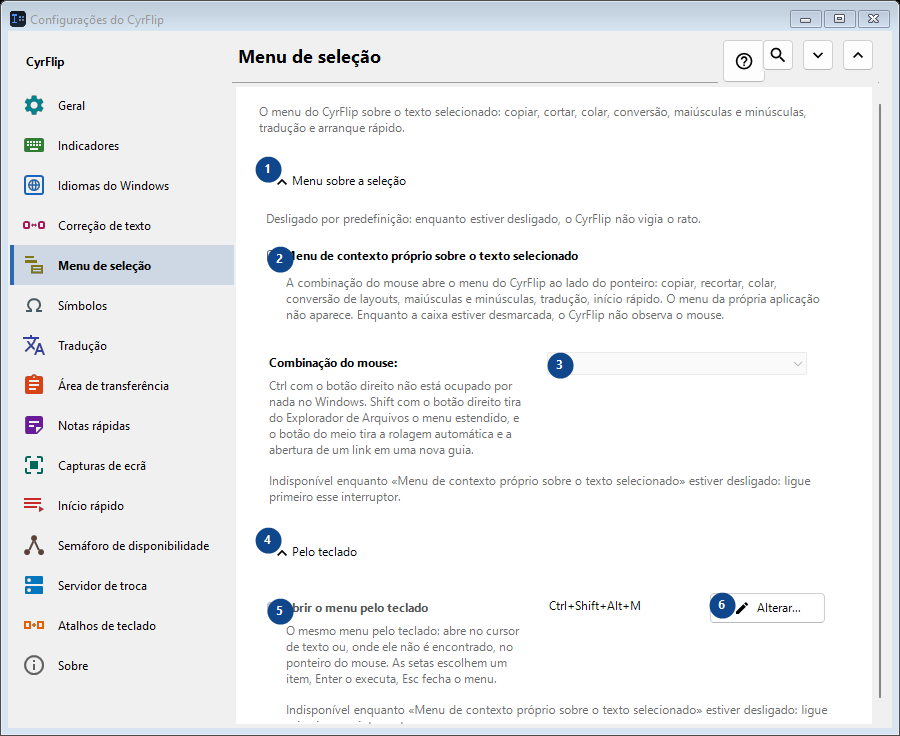
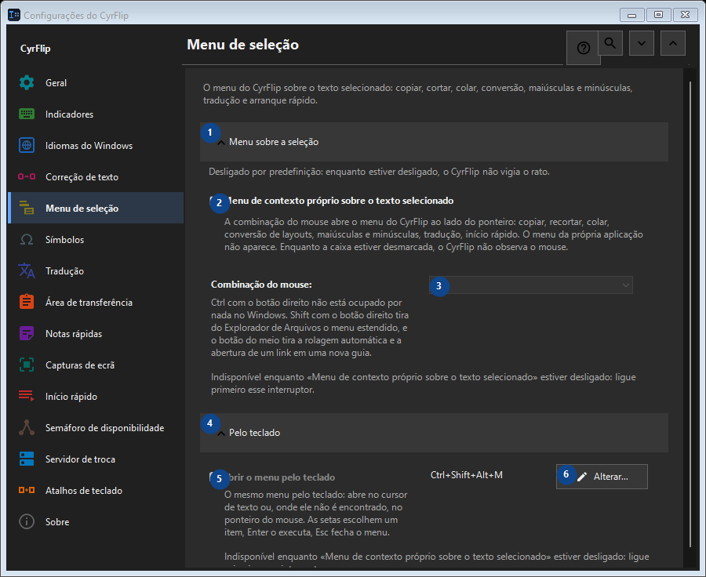

Menu de seleção
Para que serve
O menu do CyrFlip sobre o texto selecionado: copiar, cortar, colar, conversão, maiúsculas e minúsculas, tradução e arranque rápido.


Ordem de utilização
As definições são aplicadas de imediato. Não existe uma ordem obrigatória; use os grupos abaixo.
Elementos
1. Menu sobre a seleção
Use este comando para a ação indicada. Leia qualquer confirmação antes de aceitar.
Os seus atalhos2. Menu de contexto próprio sobre o texto selecionado
A combinação do mouse abre o menu do CyrFlip ao lado do ponteiro: copiar, recortar, colar, conversão de layouts, maiúsculas e minúsculas, tradução, início rápido. O menu da própria aplicação não aparece. Enquanto a caixa estiver desmarcada, o CyrFlip não observa o mouse.
Os seus atalhos3. Combinação do mouse
Indisponível enquanto «Menu de contexto próprio sobre o texto selecionado» estiver desligado: ligue primeiro esse interruptor. Este elemento não está disponível. Ative primeiro a função ou selecione uma entrada.
Os seus atalhos4. Pelo teclado
Use este comando para a ação indicada. Leia qualquer confirmação antes de aceitar.
Os seus atalhos5. Abrir o menu pelo teclado
Indisponível enquanto «Menu de contexto próprio sobre o texto selecionado» estiver desligado: ligue primeiro esse interruptor. Este elemento não está disponível. Ative primeiro a função ou selecione uma entrada.
Os seus atalhos6. Alterar - Abrir o menu pelo teclado
Use este comando para a ação indicada. Leia qualquer confirmação antes de aceitar.
Os seus atalhos